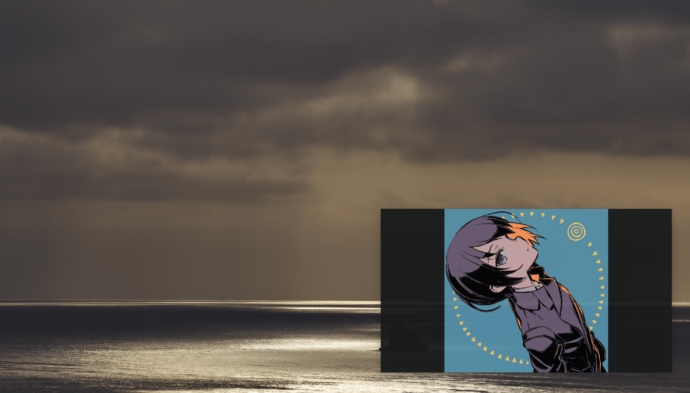

Gampuku Viewer
スライドショー型画像ビューア
twitterのTLに流れてくるイラストをいいね＆リツイートそして保存、それだけで満足していませんか？ このアプリを使うと保存したイラストを画面の一角にスライドショーできます。時間をとって眺めるも良し、 レポートのお供に使うのも良しなデスクトップアプリです。
使用言語: Python
対応OS: MacOS
スライドショー型画像ビューア
twitterのTLに流れてくるイラストをいいね＆リツイートそして保存、それだけで満足していませんか？ このアプリを使うと保存したイラストを画面の一角にスライドショーできます。時間をとって眺めるも良し、 レポートのお供に使うのも良しなデスクトップアプリです。
使用言語: Python
対応OS: MacOS
主に技術系の記事を投稿しています。
イベントに参加した感想や趣味の記事などを投稿しています。